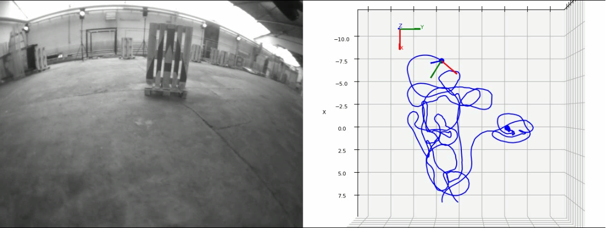
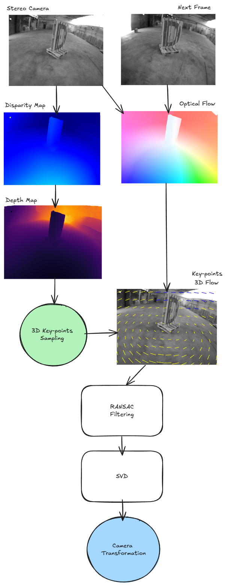

Visual Odometry
Flight Path
Flight Path is a modular, Python-based visual odometry project that combines state-of-the-art deep learning techniques with classical geometry. It integrates RAFT-based optical flow and stereo disparity methods with SVD-based camera pose estimation via the Kabsch algorithm.

Pipeline

Repository
This page mirrors the current repository overview from the main README, but uses a dedicated HTML layout for GitHub Pages. Update this file if you want the public site to diverge from the GitHub landing page later.
Source code: github.com/VOxFF/flight-path